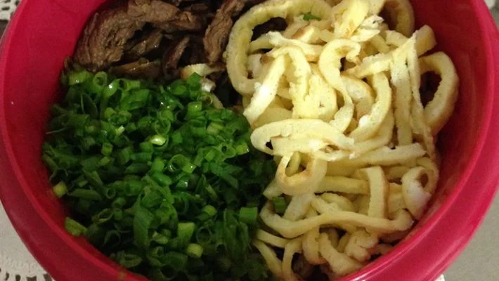

Tempura

Ingredientes
- 500g de macarrão especial para sobá
-
700g de alcatra, patinho, mignon (carne de sua preferência) cortada em
tiras médias
- 1 xícara de molho shoyu
- 5 ovos
- 1colher de manteiga
- Gengibre (picadinho)
- Cebolinha picada
- 1 colher de óleo
Modo de Preparo
-
Temperar a gosto a carne cortada em tiras, deixar penetrar o tempero por
aproximadamente 1 hora.
- Refogar a carne com uma colher de óleo.
-
Depois de refogada, acrescentar 1 litro de água e 1 xícara de shoyu.
-
Acrescente sal a gosto e deixe cozinhar por 30 minutos, em fogo baixo,
para que o sabor da carne encorpore no molho.
- Enquanto isso, cozinhe o macarrão normalmente e reserve.
- Faça ovos mexidos (fritos com manteiga).
- Depois de tudo pronto comece a montar o prato.
-
Em um refratário individual fundo coloque a quantidade de macarrão
desejada.
-
Despeje o caldo de forma a cobrir o macarrão, e deixe a carne por cima.
- Coloque o ovo mexido.
- Salpique cebolinha a gosto
- Coloque gengibre picadinho a gosto.
- Servir quente.